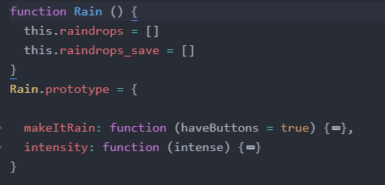
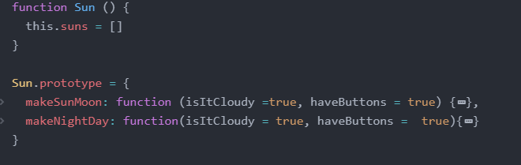
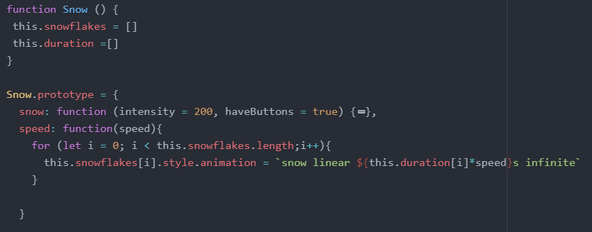

API
Getting Started
Include the library and the css file in the head of your html file.

In your javascript file, include the following Weather objects to access their functions.

Rain()
Description
The function creates animations for rain with the ability to manipulate the intensity of the rain.
Parameters and Prototype
The function includes this.raindrops = [], which saves raindrop elements. makeItRain is a function that creates the rain element. intensity is a helper function that changes the intensity of the rain.
Return
The function returns an html element that can be further manipulated in javascript.Sun()
Description
The function creates animations for the sun and moon with the ability to manipulate the clouds in the sky, as well as whether it is day or night.Parameters and Prototype
The function includes this.suns = [] which is an array that saves sun and moon elements. makeSunMoon(isItCloudy =true, haveButtons = true) is a function which creates the clickable sun and moon element. makeNightDay(isItCloudy =true, haveButtons = true) is a function which creates the rotating sun and moon element.
Return
The function returns an html element that can be further manipulated in javascript..Snow()
Description
The function creates animations for snow with the ability to manipulate the speed of the snow.Parameters and Prototype
this.snowflakes = [] is an array that holds the snowflake elements this.duration =[] is an array of falling durations of each snowflake that is used to manipulate the snow speed. snow: function (intensity = 200, haveButtons = true) is a function that creates the snow element. speed: function(speed) is a helper function that changes the speed of snow.